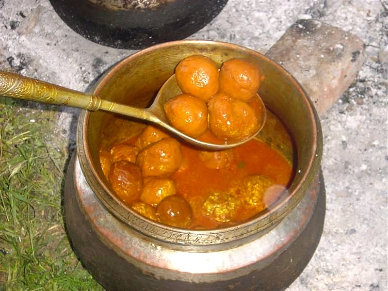

Contains: milk
Ingredients
Quantities for 4.
- 600g boneless leg, minced twice and trimmed of all sinew Mutton
- 6 tbsp Ghee
- 3 tbsp Kashmiri Chillifor colour more than heat; this is what makes rista red
- 2 tbsp Fennel Powder
- 1 tbsp Dry Ginger Powder
- 1/4 tsp Asafoetidause compounded-free hing to keep the dish gluten-free
- 2, cracked Black Cardamom
- 4 green, seeds ground Cardamom
- 4 Cloves
- 1 stick, 5cm Cinnamon
- 1 Bay Leaf
- 1 tsp, finely ground Black Pepper
- 1/4 tsp Baking Sodahelps the mince hold togetheroptional
- 800ml Water
- to taste Salt
Cookware
stovetop
Checked against the ingredient list for ten allergens: milk, egg, fish, crustaceans, tree nuts, peanuts, sesame, mustard, soy and gluten. Brands vary, so read the label on anything new to you.
Before you start
- Mince the leg twice and pick out every strand of sinew. Rista balls poach for the best part of an hour and a single thread will unravel one.
- Soak the Kashmiri chilli powder in 4 tbsp warm water for 10 minutes before you start. The paste gives an even red rather than gritty specks.
- Chill the shaped balls for 20 minutes before they go into the pan; cold meat holds its shape far better.
Method
- Work the mince with 2 tbsp ghee, 1 tsp fennel powder, 1/2 tsp dry ginger, the ground green cardamom, black pepper, baking soda and 1 tsp salt for 10 minutes until pale and springy.Ten minutes of hand-working is what makes the texture; five minutes is not enough.
- Wet your palms and roll 8 smooth balls, slightly flattened, then chill them 20 minutes.
- Heat the remaining ghee in a wide pan, add the hing and let it foam for 10 seconds.
- Add the bay leaf, black cardamom, cloves and cinnamon and let them crackle for 30 seconds.
- Off the heat, stir in the soaked chilli paste along with the rest of the fennel powder and dry ginger.Off the heat, always. Kashmiri chilli burns fast and a scorched batch goes brown and bitter.
- Pour in the water, add 1 tsp salt and bring to a gentle boil, then let it bubble 5 minutes so the raw chilli taste cooks out.
- Lower the balls in one by one and leave the pan alone for 10 minutes, swirling rather than stirring.
- Simmer uncovered on low for 35 minutes, basting the balls with gravy, until the fat rises red on the surface and the gravy has reduced by a third.That film of red fat on top is the sign it is done; without it the gravy still tastes raw.
- Rest 10 minutes off the heat and serve with plain rice.
Safe temperatures: Minced meat is done at 71°C / 160°F all the way through. Reheat leftovers to 74°C / 165°F. FoodSafety.gov
Storage
Keeps 3 days refrigerated and deepens in colour overnight. Reheat gently with a splash of water; the meatballs freeze in their gravy for a month.
Nutrition Low estimate
High protein: 33 g a serving, 35% of the calories
| Per serving335 g | Per 100 g | |
|---|---|---|
| Calories | 380 kcal | 114 kcal |
| Protein | 33.1 g | 10 g |
| Carbohydrate | 8.5 g | 3 g |
| of which sugars | 0.6 g | 0 g |
| Fibre | 5.3 g | 2 g |
| Fat | 24.4 g | 7 g |
| of which saturated | 13.1 g | 4 g |
| of which unsaturated | 9.4 g | 3 g |
Ingredients given to taste count as zero, so the real figures run a little higher. Nearest database match used for asafoetida, mutton. Estimated from raw ingredients using USDA FoodData Central.
More like this: Gluten-free Indian recipes · No onion no garlic recipes · Kashmiri recipes
Times, yields, allergens and nutrition are guidance. Use your own judgement on doneness and on storing. More in About.